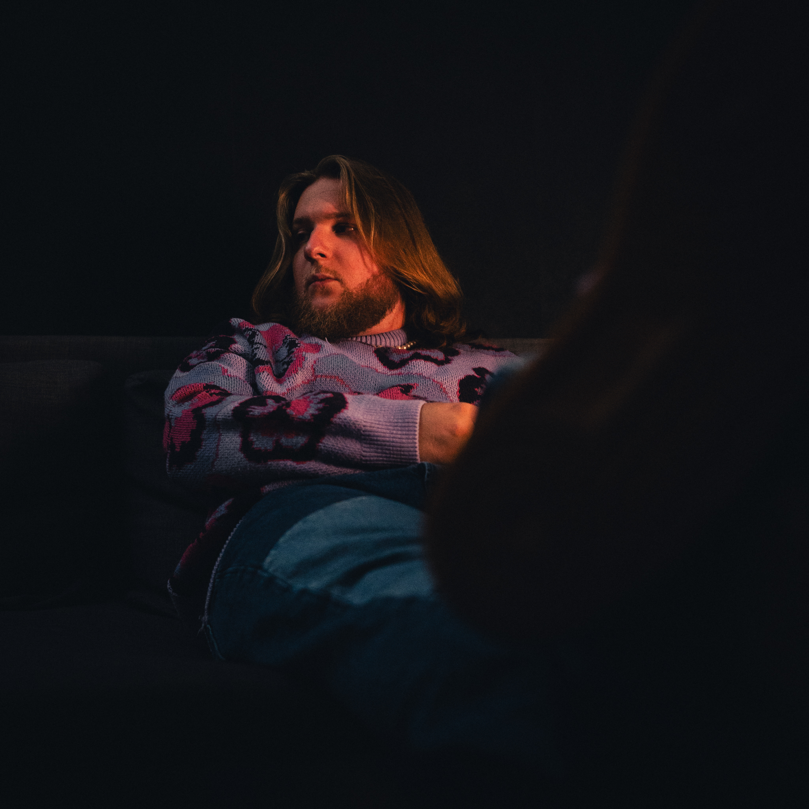
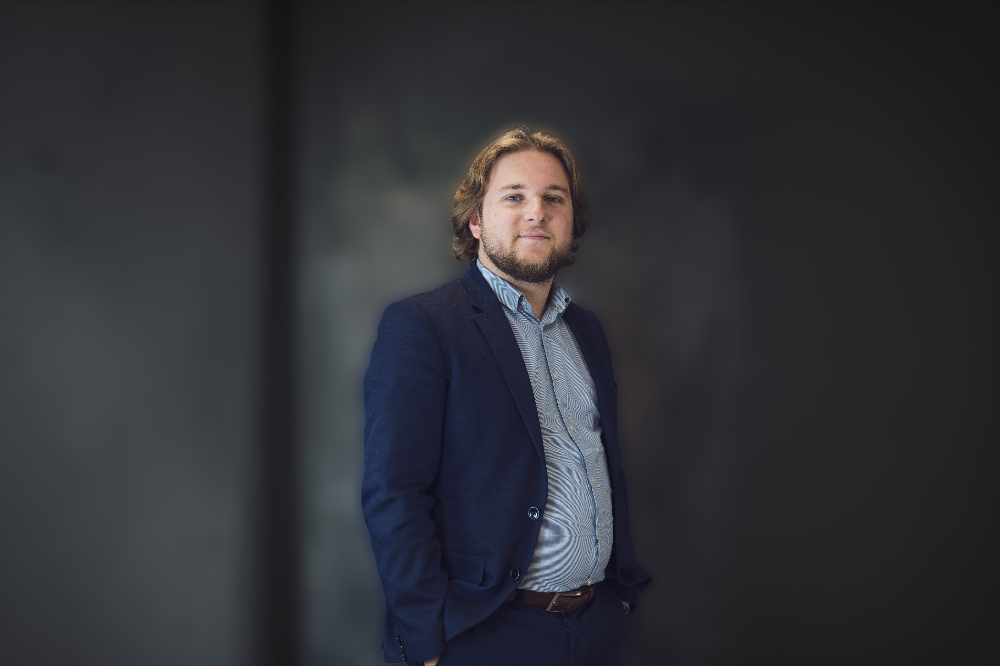
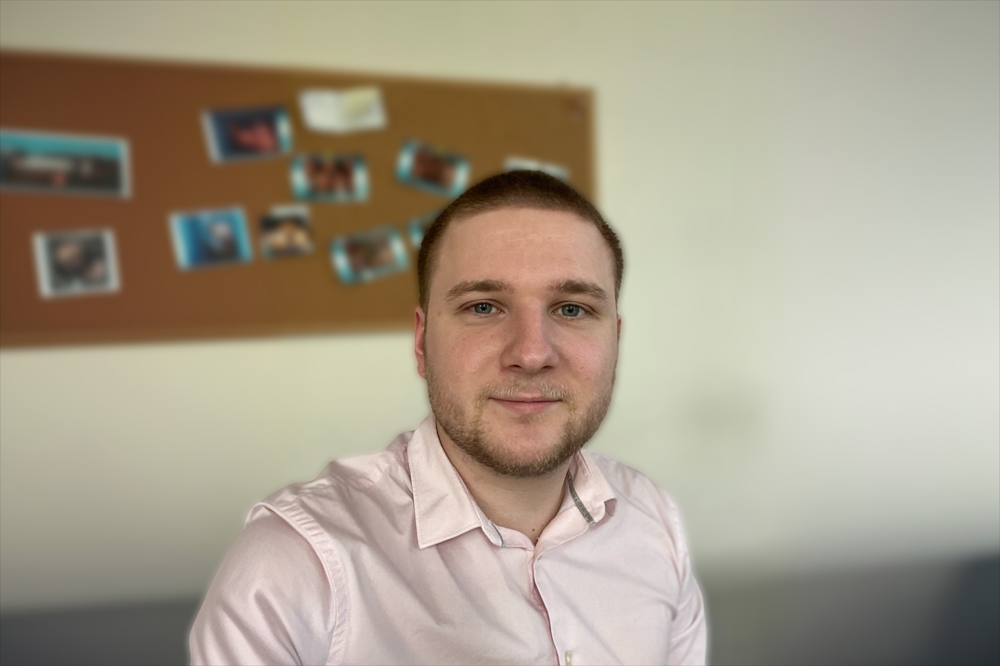

My experience
After more than a year and a half as self-employed, I have decided for multiple reasons to look for a new career path in IT. First of all, it was the banking sector that got the better of me : the sudden and rapid rise in interest rates has halted most of the business revolving around mortgages. But it was above all a process of self-improvement that made me want to move into this sector, a desire to achieve greater fulfillment in a job that suits me : a need to use my artistic fibre while allowing me to be stimulated intellectually, and a sense of usefulness.My skills
Hard skills :- HTML (beginner)
- CSS (beginner)
- Python (beginner)
- Logic
- Creativity
- Problem solving
- Eagerness to learn
- IT monitoring
My experience
Not feeling fulfilled in the banking world, I've decided to set up my own business in the mortgage brokerage sector. I have become a Cafpi Group agent, and fulfilled my wish to specialize in real estate lending. I then had the opportunity to accompany customers purchasing properties by connecting them with banks, while negotiating the best possible loan package. I also had to maintain relationships with the banking partners and real estate professionals in my network. This experience lasted just under two years.My skills
Hard skills :- Network management
- Negotiation
- Project monitoring
- Report writing
- Commercial prospecting
- Active listening
- Handling stress
- Thoroughness
- Taking the initiative
- Autonomy


My experience
With four years of experience in banking, at the time of a Bachelor's degree, a Master's degree in business customers banking and branch management (in apprenticeship), as well as a one-year permanent contract, I have been trained for the position of customer advisor, for private and business customers. I had the opportunity to manage a portfolio of individual customers, and to conduct banking transactions (consumer loans and mortgages, overdraft management, processing of incoming requests, financial investments) and insurances deals (property and casualty insurance).My skills
Hard skills :- Customers portfolio management
- Information monitoring
- Risk management
- Case follow-up
- Analytical ability
- Communication
- Curiosity
- Emotional intelligence
- Teamwork
- Organisation
My hobbies :
Music
Video games
Chess
Squash
Hiking